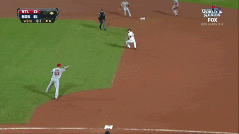

# convert wOBA into wOBA grades
all_batter_career_data_by_ID <- all_batter_career_data_by_ID %>%
mutate(FIRST_600_WOBA_GRADE = case_when(
FIRST_600_WOBA_GRADE == 0 ~ "DNQ",
FIRST_600_WOBA >= .400 ~ "Elite",
between(FIRST_600_WOBA, .370, .399) ~ "Great",
between(FIRST_600_WOBA, .340, .369) ~ "Good",
between(FIRST_600_WOBA, .320, .339) ~ "Average",
between(FIRST_600_WOBA, .310, .319) ~ "Below Average",
between(FIRST_600_WOBA, .291, .309) ~ "Poor",
FIRST_600_WOBA <= .290 ~ "Awful"),
FIRST_600_WOBA_GRADE = factor(FIRST_600_WOBA_GRADE, levels =
c("Elite", "Great", "Good", "Average",
"Below Average", "Poor", "Awful", "DNQ")))10 Project Reflections
If you’re still with me or even if you just skipped ahead, thank you again for reading!
I’m big into reflections, so I put together ten reflections to close us out. I recognize these may feel a bit trite or colloquially—tired—but it’s helpful for my individual learning and processing to get them down on paper.
10.1 General Reflections
Project-Based Learning
One of the most constant refrains of advice I keep hearing for growing your skills in data analytics is to do projects. I wholeheartedly agree.
There are a number of reasons why doing projects is such an effective way to learn. The two that stand out the most to me are 1) repetition and 2) being forced to simultaneously and continuously stretch between executing a big idea that will provide value to others while attending to extremely small details. The first is self-explanatory, particularly as it relates to coding, but cannot be emphasized enough. The second is a constant challenge, but it captures the beauty of data analytics, in that when you are pulling your hair out over a detail that is 1/1000th of your whole project, you know that ultimately all of those small details weave together into something significant that will tangibly help others.
Solving Problems, Answering Crucial Questions
Well, at least that’s the idea—to tangibly help others. Unfortunately, it can be easy to slip into data analysis done solely for the act of analyzing data or to ascertain something more trivial. For non-baseball fans, this whole project could be categorized as such, but I hope that those of you who are diehard baseball and fantasy baseball fans derived some value from it.
Toeing the fine line between valuable and trivial analysis has reinforced for me that the purpose of data analytics is to help solve real problems and answer crucial questions, not to analyze data—as counter-intuitive as that sounds. Analyzing data is a means to a greater end. With that in mind, the most vital element of data analytics is arguably uncovering the most important questions.
Domain Knowledge
What helped me arrive at a good question (at least in my opinion) is that I myself was the audience, the end-user, the decision-maker. I root for Nolan Jones and Ezequiel Tovar as a Rockies fan and make regular, difficult (relatively speaking) decisions as a dynasty fantasy baseball manager to keep or cut/trade players.
This idea speaks to another constant refrain I hear in the data space: that at least some understanding of the domain/subject/business will make you a better data analyst. In my day jobs, I’ve experienced this to an even greater extent. Knowing the goals of different nonprofit and government programs that I’ve worked with has helped me quickly zero in on important questions, relevant data, and appropriate methods for analysis and reporting.
Given how overwhelming it feels to learn and keep up with the number of technical skills and tools needed in the data space, it’s encouraging to remember that domain knowledge, not to mention other related skills like communication, project management, working with people, is a significant facet of what makes an effective analyst.
Scope & Scope Creep
If I could give any advice to the me who was just about to embark on this project a year ago, it would be to simplify my research question and narrow the scope of my project. Multiple datasets (play-by-play and prospect ranks), multiple player types (batters and pitchers), multiple periods (150 and 600 plate appearances, 215 and 860 batters faced), multiple analyses (wOBA grades, percentage outcomes, numeric outcomes, linear correlation)… it simply became too much. This was primarily because I was also learning R while trying to achieve all of this. Had I already possessed the skills, I think it would have been a reasonable scope, but learning and doing it all at the same time was a lot.
Additionally, there were many lines of code that I wrote that went unused, analyses and visualizations that ultimately were superseded by what I felt were better analyses and visualizations. I think some of this is natural and also demonstrates that I was trying to convey the analysis in the clearest and most valuable way for you as the audience. However, in the future I need to be more vigilant to guard against scope creep. Better defining my research questions and project scope from the get-go should help with this.
Don’t Be Afraid of Programming
To be honest, coding is still a bit scary. Learning a programming language like R is usually referred to as a steep learning curve, which is definitely true, but what is less mentioned is that even an intermediate grasp of a language is extremely valuable. It’s not as if you have to reach the top of the curve to start drawing value from it. In my day job, incorporating R has given me the ability to both obtain and work with larger/more unwieldy datasets that would be extremely difficult if not impossible to do with no or low-coding tools. In my personal experience, it has been so worth the effort.
The tidyverse in particular includes fairly user-friendly packages with command language that is designed to be highly learnable for data scientists and analysts. Learning dplyr with a smaller dataset feels like a good starting place in my perhaps naive opinion.
R & the R Community are Amazing
I’m sure other programming languages like Python are also amazing, but the R community regularly receives praise for being highly supportive and inclusive. I’ve found that to be accurate from observing people generously answering questions on platforms like Stack Overflow; to putting out free resources, books, and workshops; to hosting local conferences and events; and perhaps most of all, developing packages that make coding easier and are free for anyone to use.
If you’re interested in data analytics and learning a programming language but have some natural trepidation, just know that there is a whole community of people who work diligently to make it accessible for all willing to make the effort.
10.2 Technical Reflections

Rundowns/Pickles
Yes, I know we’ve wandered too far from baseball! Let’s enjoy this jewel of a GIF to help illustrate a more technical observation about my project.
At many points, I felt like I was attempting to do with my data what the St. Louis Cardinals were attempting to do with the baserunner, Jacoby Ellsbury, in this “rundown” / “pickle” in baseball terms. I was trying to write code to get the data into the format I needed but doing so in an inefficient way. In baseball, rundowns should generally take the fielding team two or three throws maximum to tag the runner out. Cleaning and wrangling data is similar.
The biggest example of this was when I was working with the prospect rank dataset that I mentioned previously. I’ll spare you the gory details, but reflecting back on it, I should have begun by writing down each issue with the data, identifying specific intermediate states for the data in addition to the end state, and doing further research on other possible ways to address the issues. By rushing into it, it actually took me far longer than it would have with more planning.
If anything, I’ll take this GIF with me as a helpful analogy for what to avoid in the future!
Code Smells
I can’t remember how I stumbled across this article, but I’m happy I did. I found it insightful despite a lack of proposed alternatives because it got my brain thinking about good and bad code, something I knew I would have to turn my attention towards eventually. For my project, I was not extremely concerned with inefficient code as long as it was not egregious because my main objective was to “get the job done” and figured I would improve my coding skills/code over time.
As an example, you can see my case_when sins.
Echoing the author of the post, I am not aware of a great alternative to this. This also makes intuitive sense to me. When the value is this, then make it ~ that. Regardless, code smells is a great concept for someone in my shoes who is now at the point of wanting to write much better code.
Code Conciseness
Related to this is the idea of code conciseness. From what I gather, code should be as readable and concise as possible.
I felt like my code was fairly readable—perhaps only because I added an excessive amount of comments every step of the way.
As for conciseness? Nope!
For example, look at this disaster if you are sick enough (viewer discretion advised). The first part of the code is just one of the many dataframes I created that you see in the second part of the code, and that wasn’t all of them.
# calculate wOBA for each batter after 900 career plate appearances
post_900_woba_bat <- bat_wOBA_log_debut_1990_on_no_pit %>%
group_by(BAT_ID) %>%
filter(CAREER_PA_WOBA_NUM > 900) %>%
summarise(POST_900_WOBA = mean(EVENT_WOBA))
# bring batter wOBA at different plate appearance totals into summary dataframe
all_batter_career_data_by_ID <- all_batter_career_data_by_ID %>%
left_join(first_300_woba_bat, by = "BAT_ID") %>%
left_join(first_450_woba_bat, by = "BAT_ID") %>%
left_join(first_900_woba_bat, by = "BAT_ID") %>%
left_join(post_300_woba_bat, by = "BAT_ID") %>%
left_join(post_450_woba_bat, by = "BAT_ID") %>%
left_join(post_900_woba_bat, by = "BAT_ID") A more efficient way to do this would have been:
all_batter_career_data_by_ID <- bat_wOBA_log_debut_1990_on_no_pit %>%
group_by(BAT_ID) %>%
1 summarise(FIRST_300_WOBA = mean(EVENT_WOBA[CAREER_PA_WOBA_NUM <= 300]),
FIRST_450_WOBA = mean(EVENT_WOBA[CAREER_PA_WOBA_NUM <= 450]),
FIRST_900_WOBA = mean(EVENT_WOBA[CAREER_PA_WOBA_NUM <= 900]),
POST_300_WOBA = mean(EVENT_WOBA[CAREER_PA_WOBA_NUM > 300]),
POST_450_WOBA = mean(EVENT_WOBA[CAREER_PA_WOBA_NUM > 450]),
POST_900_WOBA = mean(EVENT_WOBA[CAREER_PA_WOBA_NUM > 900])) %>%
left_join(all_batter_career_data_by_ID,
2 .,
3 by = "BAT_ID")- 1
-
The
[ ]subsets the dataframe to only focus on rows where that condition is met. - 2
-
The
.indicates the summary table generated by thegroup_byandsummarisefunctions. - 3
- Join the summary table to the all_batter_career_data_by_ID dataframe based on batter IDs.
This method calculates all the needed wOBA numbers in one shot and avoids creating intermediate objects that would have to be deleted later.
Functions & Iteration
The above code is a huge improvement, but I suspect it may be possible to do even better if we wrote a function or iterated in some way.
Hadley Wickham, the man who created the tidyverse packages that I used so much for this project, says that if you copy/paste code twice to write a function.
That sounds easy enough, right?
Well, my initial foray into writing functions was a bit mystifying. I was able to successfully write a function to create a gt table theme, as I mentioned previously.
I also wrote a function that I wound up not using—drawing insight from this post and another.
# write function to reclassify wOBA grades to numbers
woba_grade_to_num_fn <- function(x) {
case_when({{x}} == "Elite" ~ 8,
{{x}} == "Great" ~ 7,
{{x}} == "Good" ~ 6,
{{x}} == "Average" ~ 5,
{{x}} == "Below Average" ~ 4,
{{x}} == "Poor" ~ 3,
{{x}} == "Awful" ~ 2,
{{x}} == "DNQ" ~ 1)
}
# apply the function (example)
mutate(across(c(FIRST_150_WOBA_GRADE,
POST_150_WOBA_GRADE,
FIRST_600_WOBA_GRADE,
POST_600_WOBA_GRADE),
~ woba_grade_to_num_fn(.)))I also attempted to use the purrr package one or two times, but I didn’t get very far.
At the end of the day, I don’t feel too bad about not making much headway when it comes to functions and iteration since it is a bit more advanced, but I’m glad I got a taste and have direction in terms of what to learn/tackle next.
10.3 Philosophical Reflections
For those of you who know me, you know that I never miss an opportunity to weave in something philosophical to whatever I have my hands on. You can be the judge of whether I stretched too far :)
Pessimistic Analytics
I recently listened to an episode of the Analytics Power Hour where Kathleen Maley stated that 80% of analytics projects fail. Failure wasn’t defined as not completing a project but rather that it did not provide the business or organization value.
While it was likely an illogical leap to apply this concept directly to my project, it’s a leap that my mind must have made somewhere along the way. I started to think that I had a 1 in 5 chance of succeeding. This was layered on top of learning a programming language, my project taking an extremely long time, and working alone. There were times when I thought what I was working on would never see the light of day. I felt a bit like Detective Somerset (Morgan Freeman) who epitomizes a philosophy of pessimism in the novel-based film Se7en (minute 2:37 to 3:35 in the clip below).
Even having finished my project and reaching insights that seem at least close to actionable, I have yet to fully expel this sentiment. This line in particular lingers: “Even the most promising clues only lead to others.”
Something about the pursuit of knowledge—in analytics, the pursuit of actionable knowledge through data—has a way of leaving me pessimistic. The effect of our knowledge—even a great deal of knowledge—particularly on the most important areas in personal and communal life, feels so limited.
As much as I would like to be free of such thoughts, I think a small dose of pessimism may actually be helpful for me as an analyst. It serves to an extent as an internal filter, pushing me towards what matters and away from what is irrelevant.
10.4 In Closing
I want to say a final thank you for reading! If you have any feedback, advice, comments, questions, corrections, etc., please feel free to reach out to me at roster crunch @ gmail . com. LinkedIn, GitHub, and/or Twitter/X work too.
Take care!